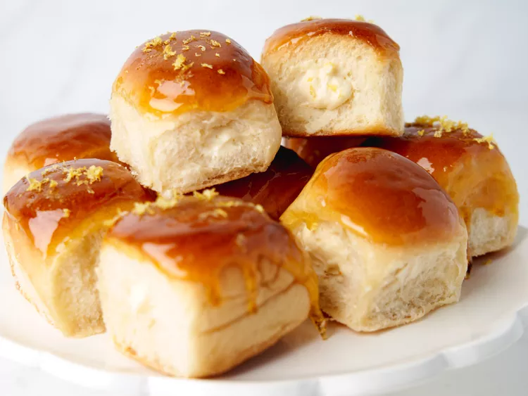

Lemon Cheesecake Donuts

These easy lemon cheesecake crème brulée "donuts" are buttery, creamy, tangy, and delightfully crunchy! This 5-ingredient dessert shouldn't be this amazing…but it is!
Ingredients
- 1 package Hawaiian rolls
- 4 tbsp butter
- 1½ cups cheesecake filling
- ¼ cup lemon curd
- 1 lemon, zested
- 1 cup sugar
- ⅓ cup water
Directions
- Preheat oven to 375 degrees F. Line parchment paper on baking pan
- Brush each roll with melted butter and place in preheated oven for 5 minutes until lightly toasted.
- Combine cheesecake filling, lemon curd, and 1 teaspon lemon zested in a bowl and stir well.
- Add mixture into piping bag.
- Use paring knife to cut small hole all the across to other side of roll.Fill each roll with a cup and a half of the mixture.
- Add sugar and water in a saucepan, bring to a simmer over medium-high heat. After 10 minutes remove from heat
- Line baking pan with parchment paper and place a rack over. Dip top of roll in the sugar mixture and place upright.
- Grate remaining lemon zest and over rolls and let sit for 10-15 minutes.
Go back